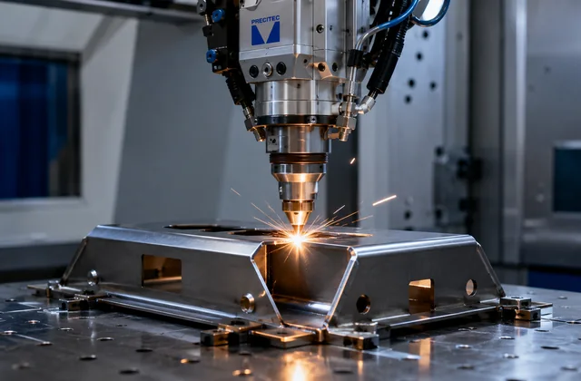
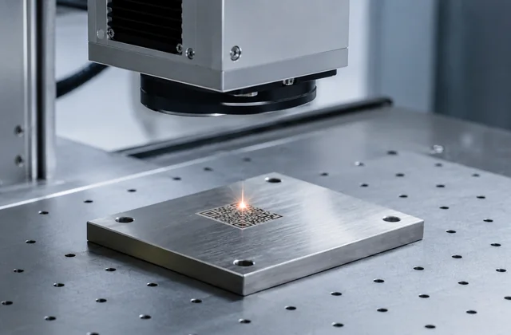
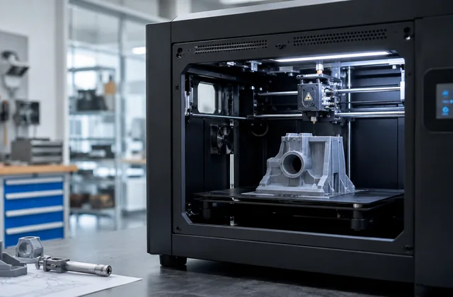
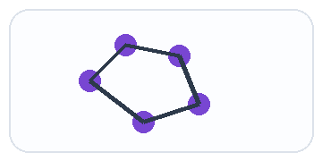
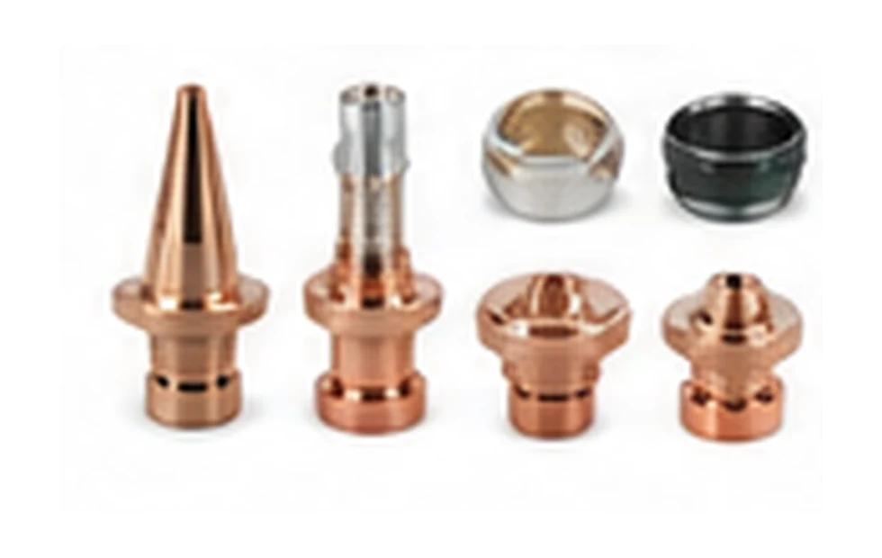
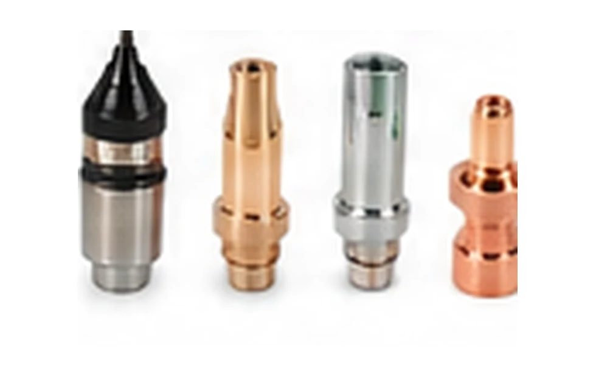
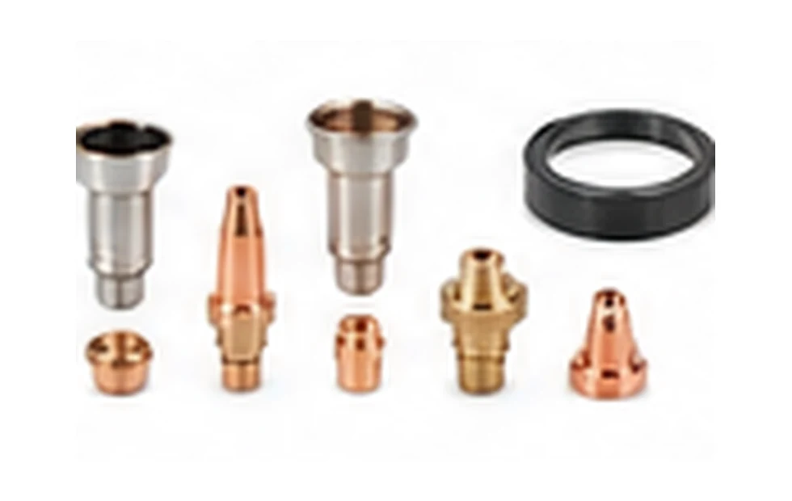
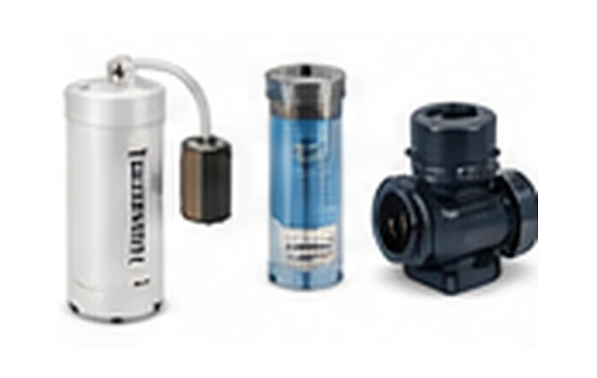

ENGINEERING.
MANUFACTURING.
INDUSTRIAL SOLUTIONS.
From design and custom components to machine maintenance, industrial spares, quality systems and business support — CRECG helps manufacturing and engineering businesses solve practical industrial requirements.

Laser Welding
Laser Marking
3D PrintingSelected client relationships.
Logo-only presentation as requested.

One brand. Eight focused capability areas.
Customers can approach CRECG for a defined requirement — design, manufacturing, a machine problem, a spare, inspection or business-system support — without needing to coordinate multiple unrelated vendors themselves.
Advanced Manufacturing & Components
Laser processes, fabrication, machining, 3D printing & custom spares.
VIEW DIVISION →Engineering & Design
CAD, drawings, product development, DFM & reverse engineering.
VIEW DIVISION →Industrial Products & Spares
Laser consumables, chiller spares, machine parts & sourced items.
VIEW PRODUCTS →Industrial Machine Maintenance
Breakdown support, PM, controls and machine troubleshooting.
VIEW DIVISION →Automation Solutions
PLCs, HMIs, Industrial IoT, modules and practical control-system support.
VIEW DIVISION →Quality, Certification & Compliance
QMS, ISO implementation, registrations guidance & audit readiness.
VIEW DIVISION →Tender & GeM Support
Tender discovery, bid documentation and submission support.
VIEW DIVISION →Inspection & QA
Pre-dispatch, dimensional, vendor-quality and QA documentation.
VIEW DIVISION →From first enquiry to practical execution.
The exact route depends on the job. CRECG can coordinate multiple stages where the requirement genuinely needs them.
Send what you have. We can start from there.
For many industrial requirements, customers do not have a complete drawing package. Initial assessment can start from the available information.

Laser machine consumables, chiller parts and industrial spares.
Supply is model- and specification-dependent. We confirm compatibility before quotation instead of treating similar-looking parts as interchangeable.

Laser Cutting Consumables
Nozzles, protective glasses, ceramic parts, selected focus/collimation optics, holders and related wear parts.
Explore category →Representative product-category visual.
Laser Welding Consumables
Protective cover glasses, welding nozzles, selected optical parts, wire-feed consumables and accessories.
Explore category →Representative product-category visual.
Laser Marking Optics & Components
F-theta / field lenses, protective windows, selected scan-head accessories and machine components.
Explore category →Representative product-category visual.
Laser Chiller Spares
Circulation pumps, filters, flow sensors, temperature sensors, level devices, valves and fittings.
Explore category →Representative product-category visual.Practical capability without inflated claims.
We want the brand to be trusted because the scope is clear, the technical approach is sensible, and the customer knows who is responsible for what.
Requirements are studied from a technical and manufacturability perspective.
Design, manufacturing, maintenance, inspection and sourcing can connect when appropriate.
Suitable for one-off requirements, short projects or recurring support.
Machine/spare compatibility is verified against model, specification and application details.
External certifications, registrations and approvals remain with the authorised issuing body.
Industrial customers across multiple manufacturing segments.
CRECG is positioned around practical needs commonly found in engineering, machinery and manufacturing environments.
Have an engineering or industrial requirement?
Send your drawing, sketch, photograph, sample component, machine details, part number or problem statement. We will route the enquiry to the relevant CRECG capability.